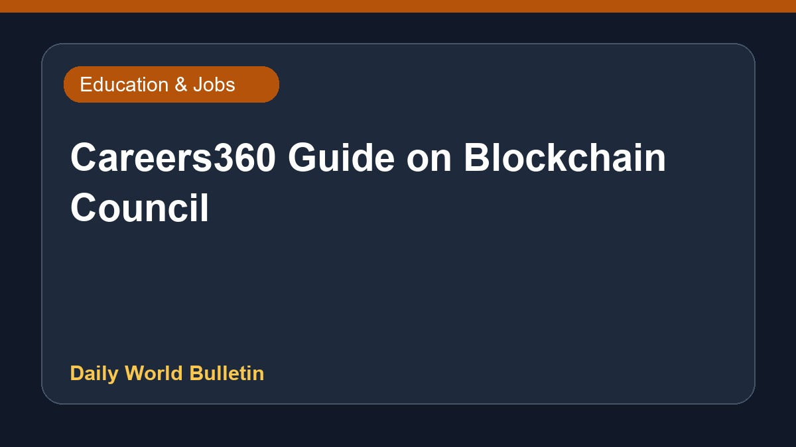

Careers360 Guide on Blockchain Council

Details are limited regarding the recent Careers360 guide focusing on the Blockchain Council. The publication offers information pertaining to entrance examinations, various educational institutions, and potential career paths in this domain. Students and job seekers exploring this specialized technological field may refer to the resource for structured guidance. Further specifics about the curriculum, admission criteria, or exact professional opportunities outlined in the guide are not provided in the current source material.
Original source: Education News Sources
Careers360 Guide: Exams, Colleges, and Careers - Blockchain Council ↗
Careers360 Guide: Exams, Colleges, and Careers - Blockchain Council ↗